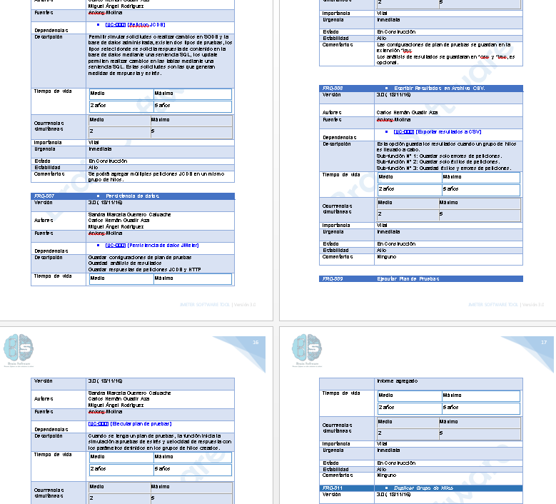
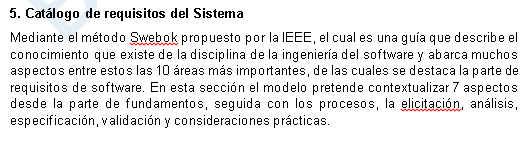

herramienta de evaluacion de eficiencia de desempreño
Analisis de requerimientos y diseño de pruebas
JMeter Software Tool busca analizar y medir el desempeño de una variedad de servicios, con énfasis en aplicaciones web y las bases de datos, aspecto que contribuye a que diferentes equipos continúen trabajando con instrumentos de gran robustez, brindando soporte aún más en sus prácticas de monitoreo y garantizando el funcionamiento adecuado de sus aplicativos.
Requerimientos de software y swebok
- fundamentos de los requisitos del sw
- proceso de los requisitos
- captura de los requisitos
- analisis de requisitos
- especificacion de requisitos
- validacion de requisitos
- consideraciones practicas
"guia del cuerpo de conocimiento Ingenieria de Software"
fundamentos de los requisitos del sw
- Definicion
- requisitos del proceso
- requisitos funcionales y no funcionales
- caracteristicas inesperadas
- requisitos cuantificables
- requisitos del sistema
Captura de requisitos
- A partir de fuentes y documentacion
Analisis de Requisitos
- Clasificacion, Asignacion y Negociacion
Especificacion de Requisitos
- Documento de definicion
- Especificacion de requisitos del sistema
- Especificacion de requisitos sw
Documento de definicion
Especificacion de requisitos del sistema
Especificacion de requisitos sw

Validacion de Requisitos
- Revision, prototipo y modelo
Consideraciones practicas
- Naturaleza iterativa del proceso
- Cualidades de los requisitos
- Remontar los requistos